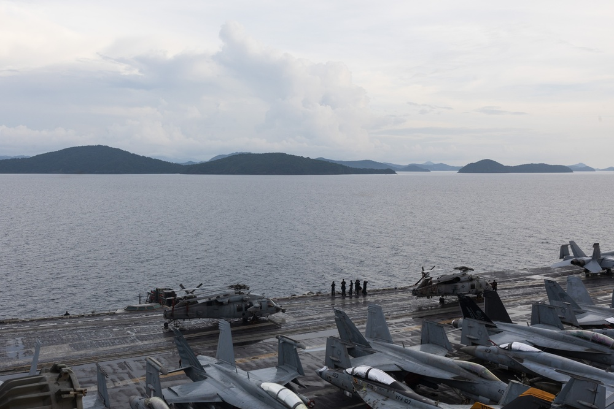

Lt. Cmdr. Catherine Sheerin, U.S. Navy · DVIDS 9984742 · Public domain · The flight deck of USS George H.W. Bush (CVN-77) off Phuket, Thailand, Oct. 4, 2026.
USNI News
George H.W. Bush anchors off Phuket after five months in Central Command
USNI News reported Monday that USS George H.W. Bush (CVN-77) pulled into Phuket, Thailand, on Sunday with USS Delbert D. Black (DDG-119). The Navy said the port call follows five months on station in U.S. Central Command during the war with Iran. The U.S. Embassy in Thailand dated the arrival Oct. 4. A Navy still from the flight deck shows Super Hornets and helicopters with green islands on the horizon.
USNI News · Read source →